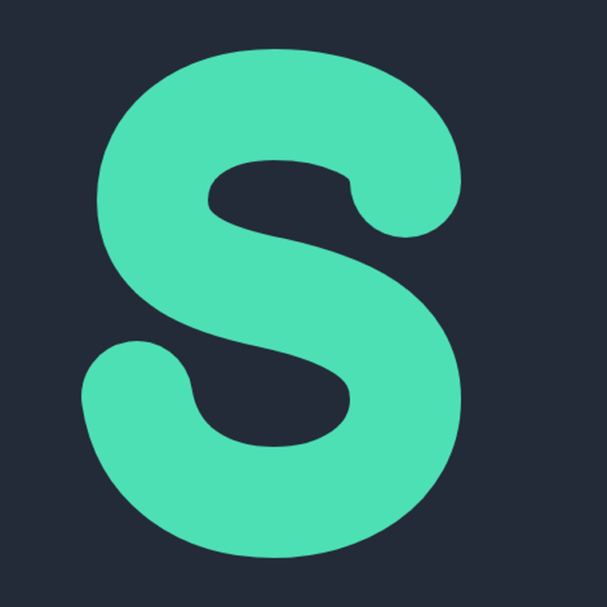
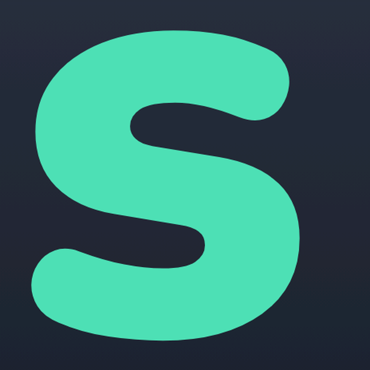
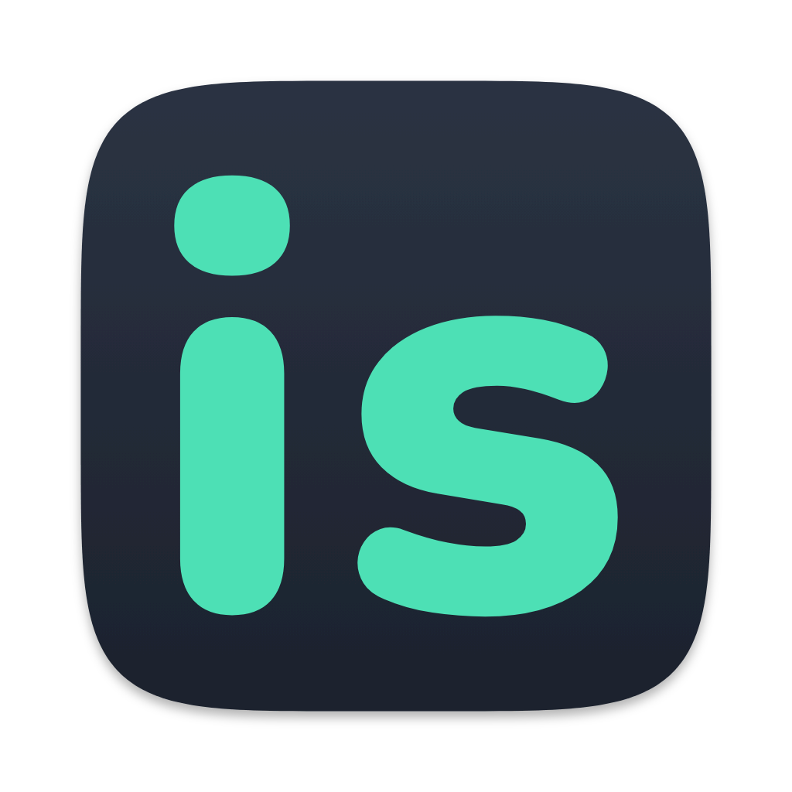
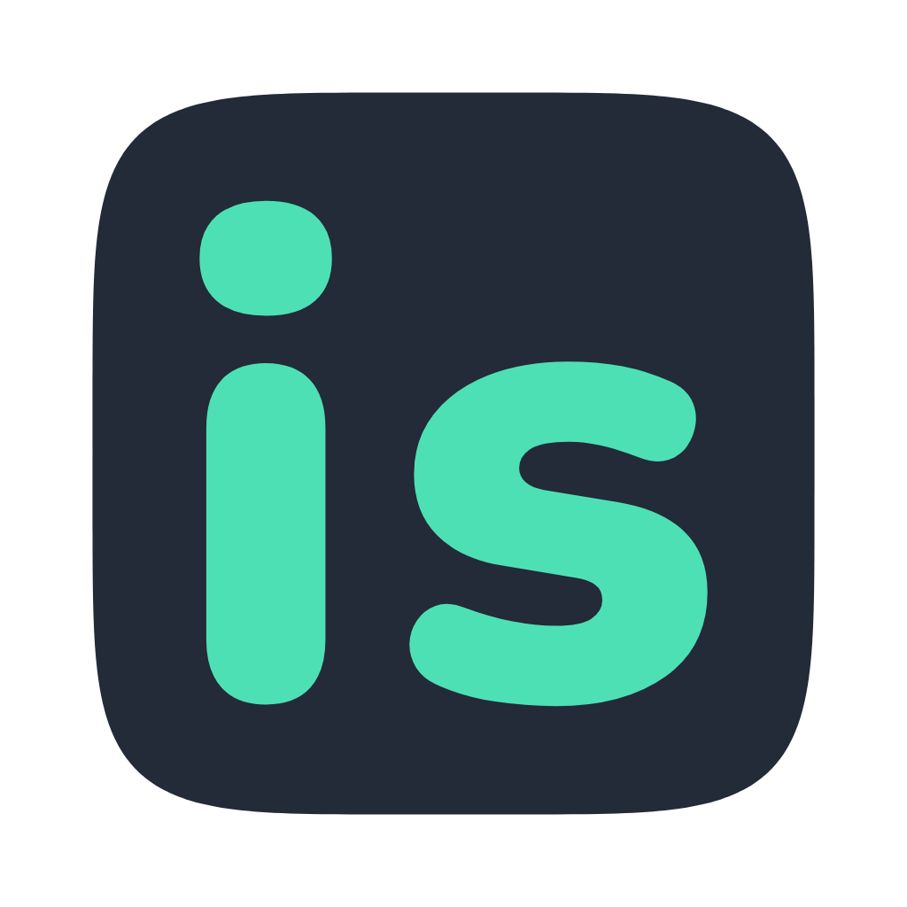
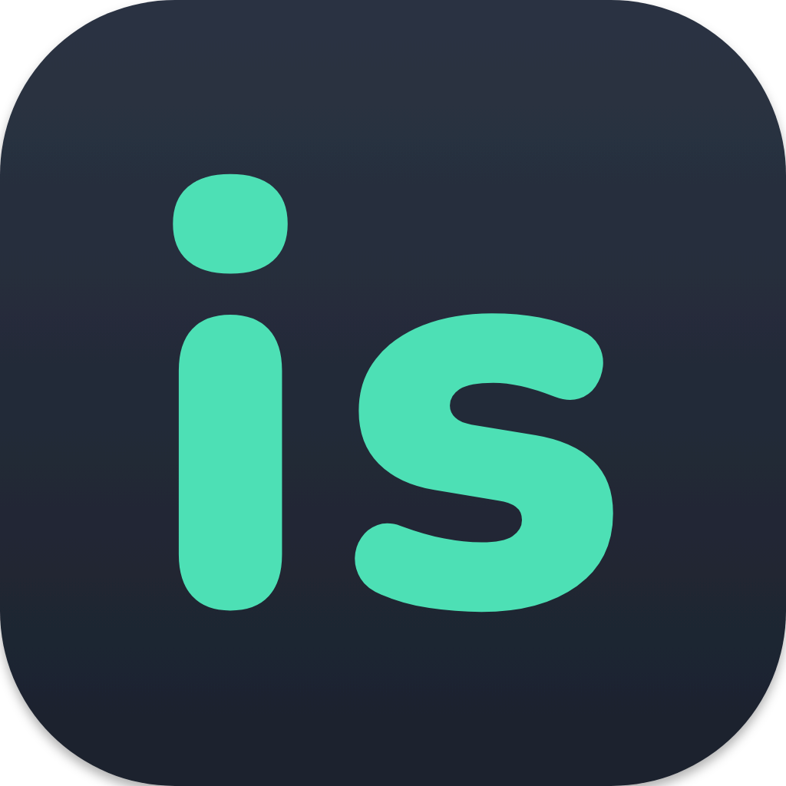
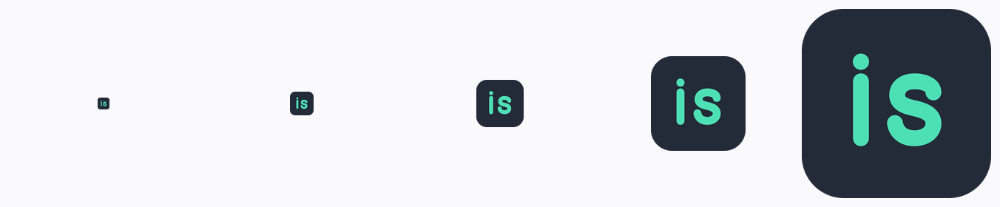
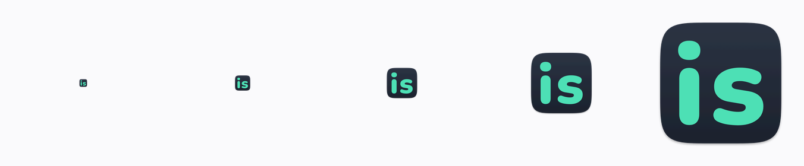

你说“粗糙”，我把它拆成三处可量的问题，然后重画了一版。下面是可以点开、放大、并排比较的结果 —— 还没动仓库里的图标文件。
| 问题 | 现在 | 为什么看起来糙 |
|---|---|---|
| S 的轮廓 | 三段贝塞尔手调，上下两个弧不是同一个圆心 | 两个弧相接的地方（右上、左下）有一条肉眼可见的“折”，放大后像被捏过；这个折在小尺寸会被抗锯齿放大成毛边 |
| 字形的比例 | i 和 s 各自独立摆位，笔画粗细也不一致 |
两个字不是同一套度量里长出来的，视觉上不齐；i 的杆比 s 的笔画细一圈 |
| 底板与留白 | 内容铺满 1024 画布，没有投影、没有渐变 | 系统图标的底板统一内缩到画布的 ~10%，底下还压着一层很淡的投影。少了这两样，图标在 Dock 里像贴在墙上，而不是一块有厚度的东西 |


i 和 s 直接取 Nunito（SIL OFL 许可，可商用）在 weight 900 下的真实轮廓，两者天生同一套度量。#2b3343 → #1c222d），系统图标都有这一层，纯平色会显得像色块。


从左到右：备忘录、App Store、国际象棋、音乐（系统图标）· 现在 · A · B。按 64px 渲染后放大 2 倍，刻意保留像素。


design/brand/icon.svg 里字形的写法，
加上 tools/make-icons.py 生成时多渲一层投影。
菜单栏那个 i 和 Windows 托盘图的形状保持不变（它们本来就是几何画法，没有接缝问题），只把字重和 App 图标对齐。
icon.svg。